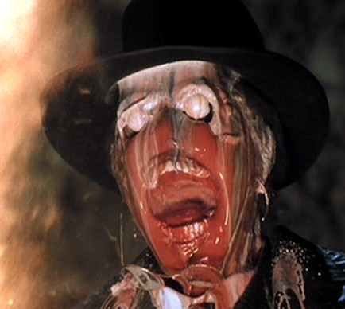

Oh dear, hahahahah 
op4rce is not cannon(or is it?i dont know,the voices in my head claim it cannon.ah i dont give a shit)their wont be new enemys,but jsut using another location doesnt mean a new enemy,or does it?

I think it’s written correctly with only one “n” ---- canon
That’s the point of Ramirezoids post isn’t it?
cannons go pew pew
canon go “HOLY SHIT OP4 ISN’T OMG”
all right then.
MADMAX YEAH!
Jesus Christ, that shat over the whole argument - awesome. Thanks for putting what I was trying to say in a watertight and tidy form.
Sorry for fucking up your thread Sky Monster :retard: I might have got the slightest bit carried away with proving a convoluted point…
Christ, I was trying to be lenient with you but you just spat that back didn’t you.
even if there is “feng-shui energy” on Xen that might sustain its native organisms, there is no such energy on Earth
Baseless assumption, and you are missing the point (which is that barnacle biology is an unknown quantity, even to professional, award-winning biologists like yourself).
Xen organisms and Earth organisms both breathe oxygen
baseless assumption. my speculation that xen organisms breath hydrogen is
just as valid as your speculation that they breath oxygen.
Liberating oxygen from a liquid atmosphere requires a completely different physiological structure than liberating oxygen from a gaseous atmosphere
some animals have “physiological structures” that can do both. i.e. frogs can absorb oxygen through their skin whether they are underwater or on land. And again, your argument rests on an assumption which is just speculation on your part - that barnacle breathing apparatus is analogous to any earth creatures breathing apparatus.
the Xen barnacle would require thousands of times as much oxygen to sustain itself for a similar period of time. Its “shell” would have to be enormous.
baseless assumption (xen barnacles breathing apparatus == real barnacle) and again, you are missing the point which was that if you see a real barnacle out of the water, you don’t assume it’s a different species than an real barnacle underwater .
The barnacle specializes in lying in wait for prey: ambient underwater currents would deprive it of this technique.
jellyfish, real barnacles, etc. do exactly what you are claiming is impossible underwater.
osmotic pressure which eventually causes cells to burst, and is a huge problem for any aquatic organism.
baseless assumption (the effect of water on xen creatures cells == earth creatures cells)
CONCLUSION: writing a mind-numbingly arrogant wall of text doesn’t make your opinion a fact. This seems to be a recurring theme in this thread.
I said that the joke he made (and the one I made apparently) “went right over your head,” an expression meaning that you didn’t get the joke.
The joke as in the one people always say when someone complains about the idiots on the forum? I got that one…
Or am I missing something?
The joke being what Raminator said - you must be new to the forums. Meaning that the forums have always been like this.
Hey guys, explain to me why a barnacle can’t live underwater and I’ll explain to you what the inside of a woman’s vagina feels like.
I just feel like jumping on this thread to state the obvious:
Underwater barnacles would be cool.
Underwater barnacles in episode 3 could be really cool.
Underwater barnacles in Black Mesa would be cool, but wrong.
People who feel the need to go into detail trying to refute these facts are not cool, but still wrong.
I’VE GOT A MANGINA!
Goddamn, mattemuse, you really have no idea what you’re talking about. That term “baseless assumption” that you used about a dozen times in your rebuttal doesn’t apply here because none of my assumptions are baseless.
If you think hydrogen can serve any useful purpose in respiration, then you clearly know nothing about organic chemistry. And your claim that your speculation that they breathe hydrogen is “just as valid” as my claim that they breathe oxygen is the most laughable thing I’ve read in days. I backed my claim up with a body of scientific evidence, whereas you backed yours up with, and I quote, " ".
They also don’t attempt to snatch up inanimate objects. They have a clear reaction to living prey that Xen barnacles lack. If a Xen barnacle’s tongue were to flap around in a current and light on random objects, it would waste a gross amount of energy dragging them in only to find no reward for the effort. Xen barnacles specialize in lying still and waiting for living prey to blunder into them.
I only compared Xen barnacles to Earth barnacles because someone else did (Floyd, I believe), so I built on his argument and used it for my own purposes.
Again, you demonstrate your complete lack of knowledge on the subject. No biologically viable membrane is impervious to water, which means that the tendency of osmosis towards higher solute concentration is still in effect.
…said the pot to the kettle. At least I can actually back up my opinion, whereas you cling to your baseless speculations and attack holes in my argument that only appear to be there because of your lack of knowledge.
EDIT:
The assumption that barnacles breathe air because everything else on Xen does is a very fair assumption to make. After all, all multicellular Earth-dwelling organisms breathe air. What I assumed here is that life on Xen is descended from a single common ancestor, as it is on Earth, which is also a fair assumption when Darwinian models are applied to the situation (which have proven a very valuable and reliable resource in the field of biology).
And again, I only compared Xen barnacles to Earth barnacles to build on someone else’s argument and illustrate a point. I never suggested that they are in any way similar (in fact, I said that it would be impossible for them to function in a similar manner).
DOUBLE EDIT: And now that I think about it, I have another point that lends credibility to all of my arguments: Xen barnacles were able to survive on Earth for ~20 years (the time between HL1 and HL2). During this time, they probably fed mostly on Earth organisms (especially in the areas in which they’re seen in Half-Life 2). This suggests that they can derive sustenance from Earth organisms, which in turn suggests that, like Earth-organisms, they are carbon-based. (This would be a reasonable assumption to make anyway; the only other platform viable for life is silicon, and even then, carbon is a much better candidate for a number of reasons.) This newest theory has a lot of implications for the argument at hand.

:fffuuu:
:’(
{kind=link}
Or it would be, if not for Marc Laidlaw telling us that ‘nothing is native to Xen’, and about Xen’s nature as a border between many different worlds/dimensions (Earth and the Combine worlds, amongst two). There is no particular reason to suppose that barnacles share a planet or even dimension of origin with any other Xenian species.
But that is the only assumption of yours I would challenge. [COLOR=‘Red’]And yet it’s all irrelevant, as this isn’t going to happen. Barnacles are covered in the ‘Thou Shalt Not Discuss’ FAQ, and this discussion no longer belongs in the BM Suggestion Box. If you want to continue it, take it to the HL series forum. I can move posts if necessary.
While this suggestion is quite obviously denied, the FAQ mention (of not speaking about barnacles) is so people may stop asking how much of HL2’s resources we should expect to see. It’s cited in the form of an answer to that question.
We’re allowed to talk about barnacles. We’re not allowed to speak of… “HOW MANY NEW SKINS/HOW MUCH IMPORTED CONTENT FROM HL2 CAN WE EXPECT TO SEE[/SIZE]”.
Even then, all that is told is the barnacle will be borrowing HL2’s “model, animations, AI and textures”. This does not exclude some expansion to the AI to, say, work with their difficulty. This does not forbid new placements of the creature in levels.
While there’s consensus that we shouldn’t have these creatures underwater, and the suggestion should be denied, I don’t want to see another travesty of denial based upon unsound citations.